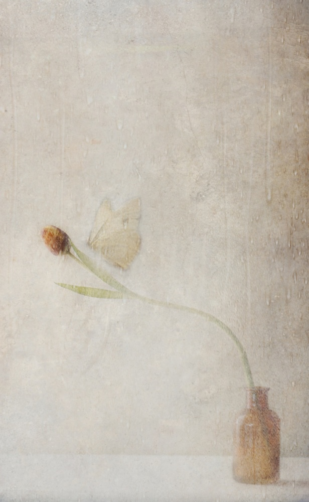
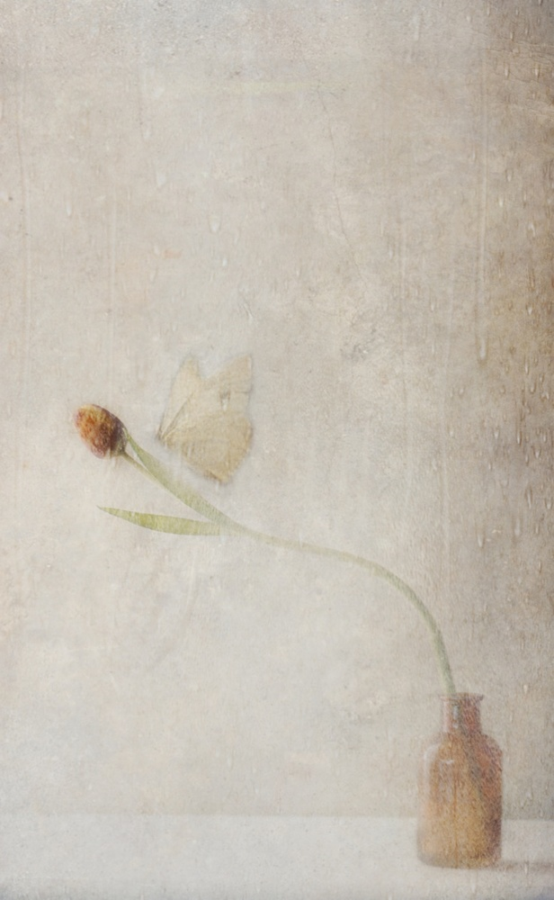

There are many things in our societies that were impossible without photography, but I had to think about a specific gift… Maybe it's because my wife is an Ikebana (Japanese Flower Art) teacher, she spends hours sometime more,
to create a piece of art, and in less than a week it is gone, decay took over… if we didn't have photography it would be impossible to remember what it looked like... During my search for Ikebana photography, I came across
the work of photographer and film-maker Sharon Lockhart. Her project No-No Ikebana is an example of deciduous art, I read…
What did it mean? Not being a native English speaker, I had no idea. With the help of online dictionaries, I read: Deciduous means lasting only for a short time - not permanent - transitory… for example falling off or
shed at a particular season, stage of growth, as leaves, horns, or teeth. Another word that came to mind is Ephemeral it also means lasting only for a short time, or Caducity - the quality of being transitory or perishable
most used in situation of mental health problems. I think I got it, all meant was short-lived…
Photography allows us to capture ‘short-lived art’ and enjoy it years later. The art itself has disappeared. Sharon made this her challenge, she created The No-No Ikebana series of works. A series of nineteen photographs over 31
days divided among four groupings portrays the life cycle of a NO-no Ikebana arrangement of Brussels sprouts. A radical form of the Japanese art of Ikebana flower arranging, in which fruits and vegetables are selected directly
from the farm and the life cycle of the arrangement is highly considered. The images of the Brussels sprouts highlight the passage of time and the process of decay, allowing nature to create its own aesthetic gesture against
the minimal background.
With this project I mind, I started exploring 1x.com’s wealth of images to see if there were photos that show us art which would be deciduous in the same sense. I expected the range of examples is to be endless, as every flower
or food photographer can tell you… decay is a big factor to consider. Their subjects usually disappear through decay.In my search I used Keywords like: Deciduous - Caducity – and Short-lived all didn’t give me any returns…
Finally, I tried Ephemeral and got returns, 8 to be exact… however it is a fine selection exemplifying the broad spectrum of this phenomenon… one these you see above in the introduction, the other are
 

All eight of them depict beautiful moments and subjects that last only for a moment, because time (felt through light-conditions, erosion, distance, etc) catches up with them…
Next, I tried the keyword Ikebana it yielded
almost 30 returns… I picked a few to show you… the first one by Olga seems Ikebana made with a wink...
Then suddenly… it became clear… almost any photo subject is short-lived… a spring blossom, an autumn forest, a photo of a volcano eruption, or even a portrait….
Once that thought landed you begin to see how huge the
impact of photography is on our way of remembering… For centuries it was impossible to capture slices of time or a piece of visual art that would just survive for a moment like a dance, flower or food art, and perhaps most
impactful to see a portrait of a loved one that passed away; today we dig into our family album and at least see the person that once was…
Photography is a huge gift to mankind…